← 返回阅读库 · 原论文目录
论文讲解阅读文档 · 多模态语言模型 · v048
ViperGPT Visual Inference via Python Execution for Reasoning[2303.08128]
视频时长 00:05:58；讲解文字 2,411 字符；提取讲解画面 28 张。按视频原顺序阅读，每段文字保留时间戳。
文字来自整段视频的自动语音转写，按自然停顿分段，并与 PPT / 论文页面 / 演示画面对齐。未将讲解压缩为摘要；术语、数字和口述公式请结合画面及原论文核对。 阅读稿已校正规范部分明确术语误识别；原始逐字稿和每处修改记录另行保留。
讲解画面为源视频截图（640×360），不是可编辑 PPT 文件。全片按每秒 2 帧扫描内容变化，逐步展开页保留；连续动画保留代表画面。清晰度受源视频限制。
下载完整资料包 · 含离线 HTML、PDF、Word、全部 PPT 画面和字幕。
原论文与材料
ViperGPT: Visual Inference via Python Execution for Reasoning · 下载完整 PDF（18 页）
按时间阅读
00:00:00–00:00:19 · 画面 001
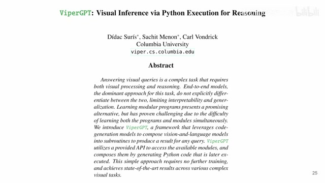
00:00:00–00:00:19 · 画面 001大家好,今天我们来快速说一篇论文 Viper GPTVisual Inference via Python Execution for Reasoning，这篇论文也是非常直接，就是用 Large Language Model 去生成一些 Python 代码来解决我们的 Visual Inference，也就是一些 VQA 的问题，我们直接来看
00:00:19–00:00:23 · 画面 002
00:00:19–00:00:23 · 画面 002首先我们的这个问题是要一个具体的什么问题呢？就是我给一个视频或者是图片，还有一个文字性的这个 query，然后呢，我希望那 query 一般就是一个关于这个视频或者图片的一个问题啊，那我希望我的 model 告诉我这个他的这个 query 的这个 answer 到底是什么，那区别于之前的方法呢，本文里面的这个模型呢，这个网络呢，他不是说去直接的处理图像
00:00:23–00:00:26 · 画面 003
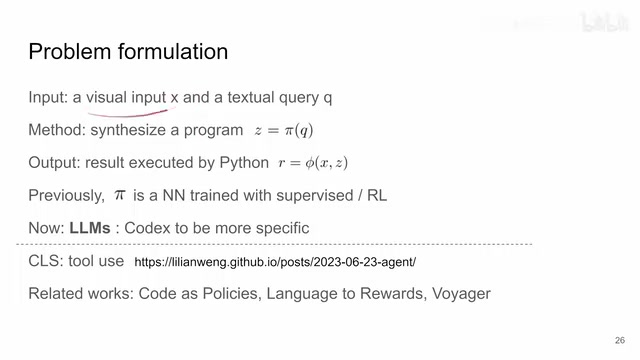
00:00:23–00:00:26 · 画面 00300:00:26–00:00:37 · 画面 004
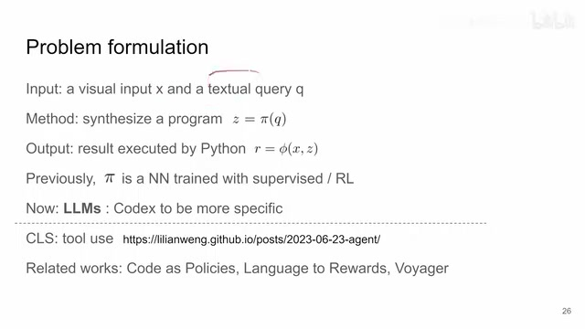
00:00:26–00:00:37 · 画面 00400:00:37–00:00:47 · 画面 005
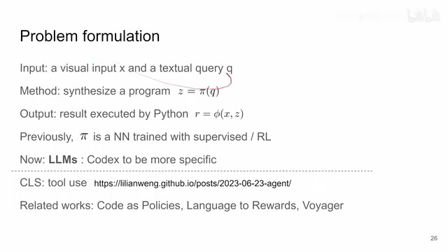
00:00:37–00:00:47 · 画面 005而是说呢，他去生成一个这个 Python 的代码，那我们通过执行这个 Python 的代码来把这个我们想要的信息给他获取出来，那么在之前呢，有这个相关的研究，这些代码的生成的过程呢，都是用这个一些相对简单的比如说 LSTM 这种样的这个神经网络来做的，而且呢，这些网络呢，训练的时候呢，都是通过借由监督的或者是这种强化学习的方法来训练出来了
00:00:47–00:00:53 · 画面 006
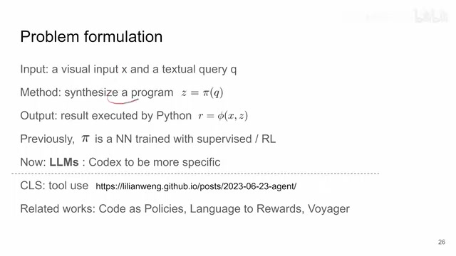
00:00:47–00:00:53 · 画面 00600:00:53–00:01:21 · 画面 007
00:00:53–00:01:21 · 画面 007那这边就是说，我们现在既然有 large language model 对吧，我们就直接拿来用就好了，别人替我们训练好了，他们用的是 openAI 的 codex，那这边的核心思路就是这个样子，那就是我们生成代码生成的 python 代码，它用的是我们的 codex，然后我们会给它相应的 API 去处理这个图像里面的信息，这样子让这个代码能够更好地完成这个图像相关的任务
00:01:21–00:01:24 · 画面 008
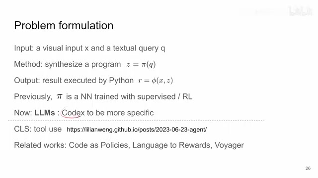
00:01:21–00:01:24 · 画面 00800:01:24–00:01:26 · 画面 009
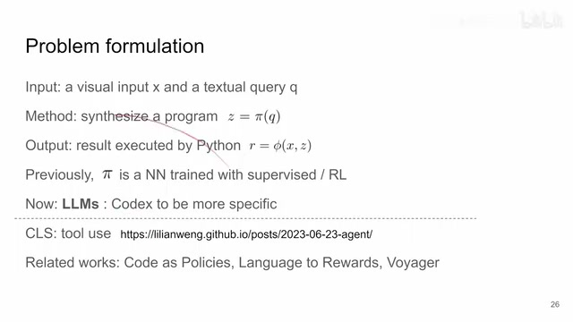
00:01:24–00:01:26 · 画面 00900:01:26–00:01:30 · 画面 010
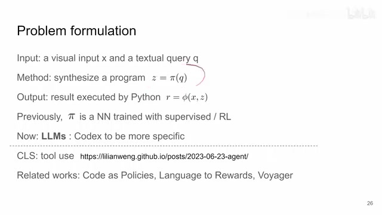
00:01:26–00:01:30 · 画面 01000:01:30–00:01:32 · 画面 011
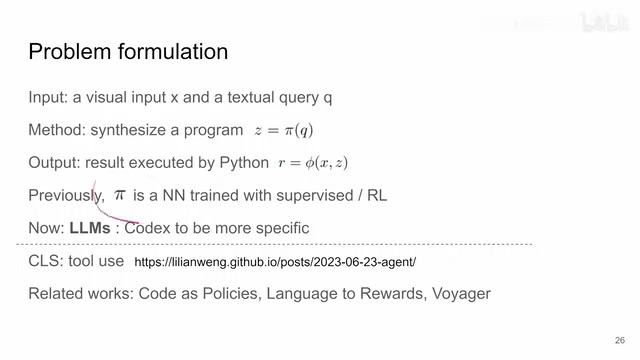
00:01:30–00:01:32 · 画面 01100:01:32–00:01:44 · 画面 012
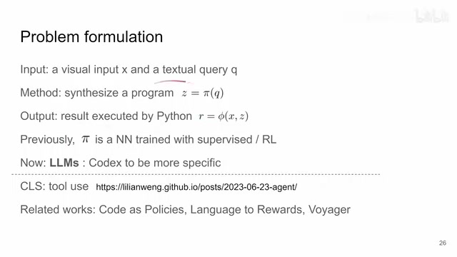
00:01:32–00:01:44 · 画面 012那所以这篇按照历年的他这个分类呢，这篇博客里面的分类呢，应该算是这个工具使用这一类。那与他相似的也是用这个 large language model 去生成代码的这样的任务呢，有比如说像这个 Code as Policies、Language to rewards 这两个是 google 的，还有这个旅行者做 minecraft 用这个 GPT 去做这个 minecraft 代码的，阿门是相同一类的这个工作
00:01:44–00:01:45 · 画面 013
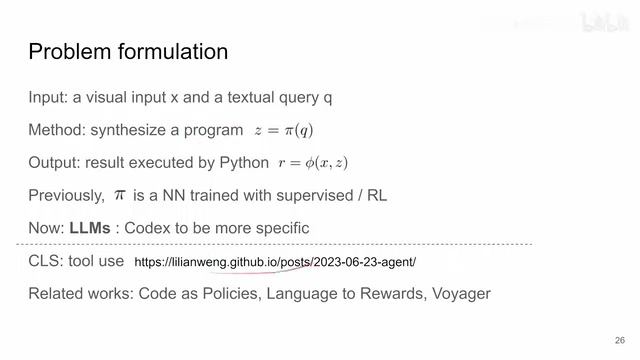
00:01:44–00:01:45 · 画面 01300:01:45–00:01:59 · 画面 014
00:01:45–00:01:59 · 画面 01400:01:59–00:02:04 · 画面 015
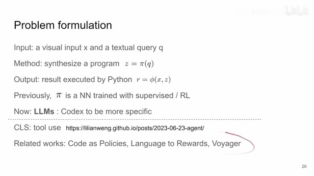
00:01:59–00:02:04 · 画面 01500:02:04–00:02:05 · 画面 016
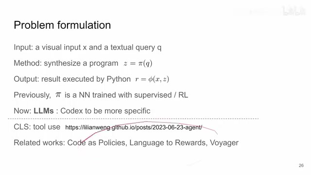
00:02:04–00:02:05 · 画面 01600:02:05–00:02:25 · 画面 017
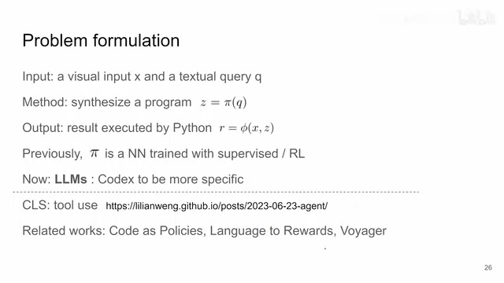
00:02:05–00:02:25 · 画面 017那么当然这些工作他们的思路上都是非常直接的我单独我单独针对每一个文章出一个视频呢似乎也没有什么必要真正感兴趣的朋友呢非常推荐你到原文里面去查看它的各种使用细节本质上的都是通过不同的姿势去开发这个 large language model它的这个用途
00:02:25–00:02:41 · 画面 018
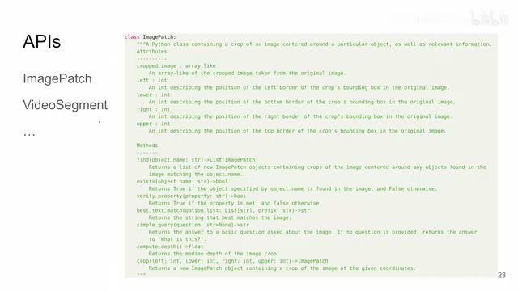
00:02:25–00:02:41 · 画面 018那么回到本文这篇具体来说呢就是把这些相关的视觉的 API 啊作为 prompt 就交给我们的这个代码生成器这个 large language model这个 codex然后呢让它这个直接生成代码嘛那具体的 prompt 呢大家也可以看到附录里面
00:02:41–00:02:42 · 画面 019
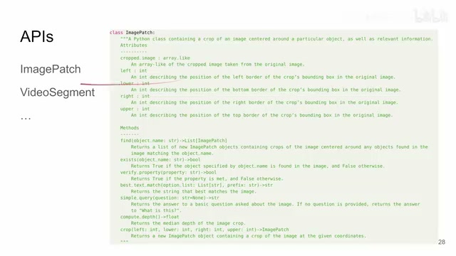
00:02:41–00:02:42 · 画面 019比如说这个是针对 image patch 的操作
00:02:42–00:03:03 · 画面 020
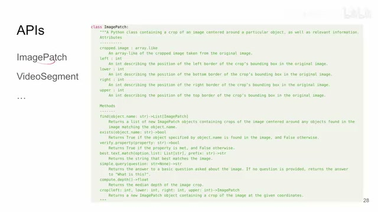
00:02:42–00:03:03 · 画面 020它可以在这个图像里面做各种各样的事情啊还有这些针对视频的东西那本质上这些 API 呢就是一个个工具箱对吧你交给这个 language model 的时候你也不用管它具体的实现是什么你就告诉它这个 API 怎么用那实际执行代码的时候呢你就换成相应的专用的模型去把这个任务做出来就好
00:03:03–00:03:05 · 画面 021
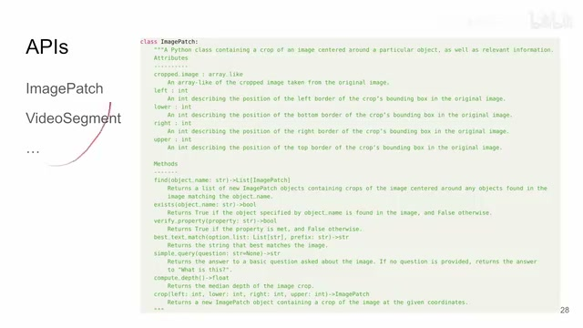
00:03:03–00:03:05 · 画面 021这个也没有什么特别好说的那么我们
00:03:05–00:04:18 · 画面 022
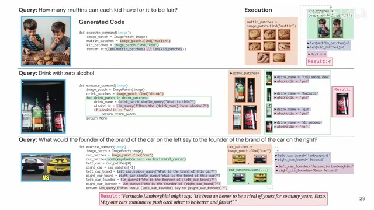
00:03:05–00:04:18 · 画面 022我们直接来看几个具体的例子啊比如说这个这个图对吧给一个图然后呢问每个孩子可以吃多少个 muffin然后他做的事情呢就是首先我去找这个图里面有多少个 muffin然后呢再找这个图里面有多少个孩子啊然后最后给一个运算结果就好了嘛那么在这里 language model 重要的作用呢就是它把这种复杂的抽象的高度抽象的这种问题通过 language model 自己的理解把它分成我们底层的这种图像的实验视觉任务然后还有这种基本的运算这个呢是 language model 真正强大擅长的地方
那包括这个对吧哪些是没有酒精的饮料他就先找有哪些饮料然后一个个查这饮料是什么然后呢问我们这个 language model 用一些常识对吧来说这个这个这个饮料里面有没有这个酒精啊对吧你包括你看到这个 language model它可以生成这种带这种循环带这种 if 的这种代码那毕竟网上的 Python 代码太多了那再看这边这个更复杂的例子比诺托尼的法拉利呢啊不对不对这个但是道理是一样的用一个大的 language model 去把其他各个小的 model 给它粘起来那么这些是一个具体的例子那么下面直接看到结果对吧咱作者测了很多数据集比如说这个 RefCoco 这是一个典型的例子只有 RefCoco 就是根据这个 query 来找到我们的相应的这个图像中的这个位置嘛那包括还有其他的像 GQA 还有其他的各种 VQA 的数据集呢感兴趣的朋友呢你直接看论文就好了
00:04:18–00:04:31 · 画面 023
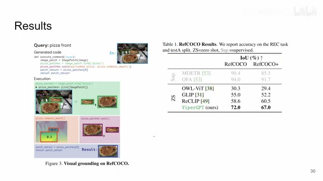
00:04:18–00:04:31 · 画面 02300:04:31–00:04:44 · 画面 024
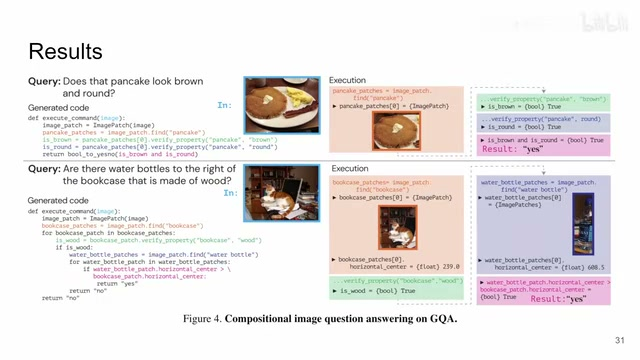
00:04:31–00:04:44 · 画面 024那本质上方法一样呢就是把你的 API 都告诉这个 model 然后让它去生成代码就好了嘛那么当然其实最有趣的呢还是这一组实验啊就是说你看呢这些是我们的这些 API 里面的这个各种操作对吧如果说我人为的把这些函数的这个功能啊给它禁止掉那么我们的性能会如何呢你可以看到我们办了不同的这个函数之后呢它的性能的下降呢是很不一样的
00:04:44–00:05:28 · 画面 025
00:04:44–00:05:28 · 画面 025这也从另一个侧面告诉我们你在真正开发一个通用的智能的时候下面的哪一个小的模块影响是最大的像这边是另一个很有意思的例子根据前文的一些背景的知识假如说这是一个在美国拍的车走左边这样车是不对的假如说是在英国拍的车在左边走就对了这就展示了对吧这个 language model 它是可以理解前文的内容的
00:05:28–00:05:29 · 画面 026
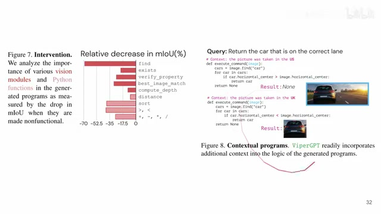
00:05:28–00:05:29 · 画面 02600:05:29–00:05:57 · 画面 027
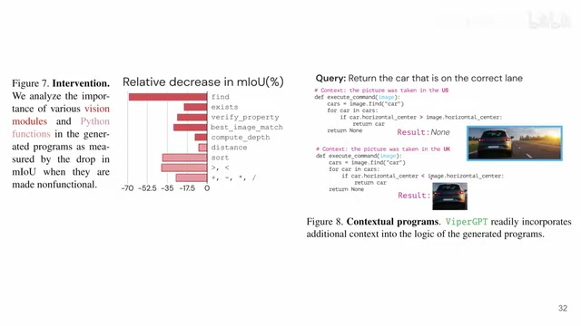
00:05:29–00:05:57 · 画面 027好的那么以上就是我对本文的一个快速的整理你可以看到他的思路是非常的直接就是把我们的工具通过恰当的方式给它使用起来那再一次跟我之前说的一样很多的文章的他的思路都是这样子那训练的部分也没有直接就是一个鱼料建造把各部分粘下来就好了所以只从方法这个层面来看是非常直接的好的那么感谢您的收看再见
00:05:57–00:05:58 · 画面 028
00:05:57–00:05:58 · 画面 028转写与来源说明 · 2 个自动复核提示
保留 75 个原始语音片段，2 个片段触发自动复核提示。提示仅用于定位可能的术语、重复或识别问题，不等于已确认错误。
讲解画面为源视频截图（640×360），不是可编辑 PPT 文件。全片按每秒 2 帧扫描内容变化，逐步展开页保留；连续动画保留代表画面。清晰度受源视频限制。
原视频：paper/合集_2026-10-16_多模态语言模型/[论文速览]ViperGPT Visual Inference via Python Execution for Reasoning[2303.08128].mp4
SHA-256：cdcba19b737167a728d9a797c869552ccaf4c739f827e7162528125e947a9732
这个 large language model
你包括你看到这个 language model
全文按视频语音与画面制作。原论文可从上方链接下载；完整资料包保留全文、原始逐字稿、字幕和校对记录。